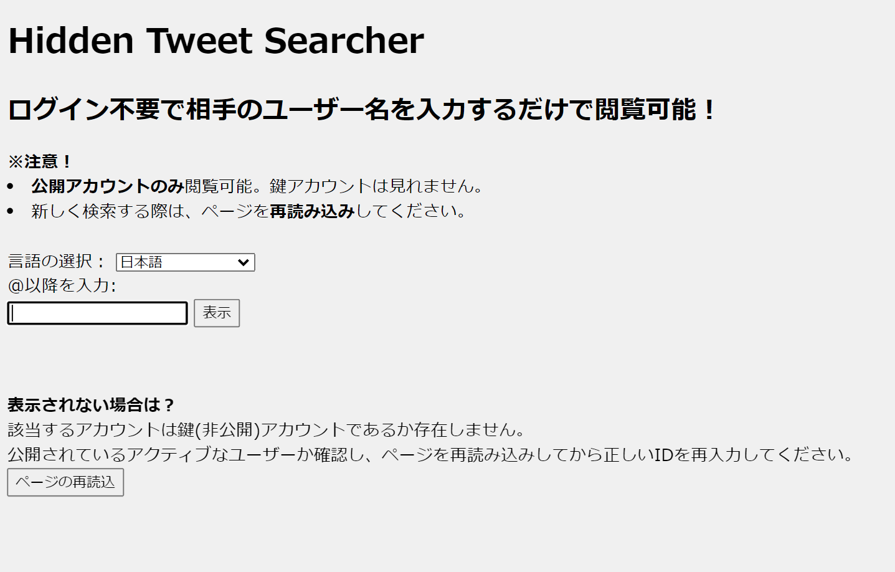

About
SpaceXとLenovoが好きなただの日本の高校生。
Just a high schooler who likes SpaceX and Lenovo in Japan.
Works
申し訳程度の作品の公開スペース
Hidden Tweet Searcher アクセスはここから

◆ 特徴
Twitterアカウントへのログイン不要で相手のユーザー名を入力するだけでツイートを閲覧可能！
◆ 注意 注文が多いね
- Blink系ブラウザで動作します。Microsoft EdgeとGoogle Chromeで動作確認済み。※Apple Safariでは動きません。
- 公開アカウントのみ閲覧可能。鍵アカウントは見れません。
- 新しく検索する際は、ページを再読み込みしてください。
- 表示されない場合は？
該当するアカウントは鍵(非公開)アカウントであるか存在しません。 公開されているアクティブなユーザーか確認し、ページを再読み込みしてから正しいIDを再入力してください。
◆ 一言
Twitter社が一般公開している「Twitter Publish」の埋め込みコードにJavaScriptを加えたものになります。詳しいことはコードを読めば分かると思います...
Syuugo@s1204IT氏との合作です。Pull Requestをいただきました！
[GitHub]
Devices
使用環境。
Twitterで話すWindows Insidersについては下記の環境が前提となっている。
Lenovo Yoga 6 13ALC6

11月に購入。
天板がファブリック素材で覆われている面白いラップトップ。Ryzen 5000Series搭載で処理能力が高い。排熱に優れていて性能を活かすことができる。
- Ryzen 7 5700U
- Radeon RX Vega 8 Graphics
- Windows 11 Home (Build 22581)
- DDR4 3200MHz 16GB
- PCIe-NVMe 475GB
- FHD 13.3" IPS 10点マルチタッチ
- 802.11ax / Wi-Fi 6
Lenovo L22i-30

1月に購入。
低価格ながら3辺狭額ベゼルで見た目も良い。
- FHD 21.5" IPS
- HDMI 1.4 / VGA
Programming
現在学習中の言語。Pythonをメインに進めている。
Python 3
OpenCVを使った画像分析とMarkovifyというライブラリを利用したディープラーニングを学習中。
C#
物理エンジン「Unity」を使うために学習中。
Software
現在練習中の主なソフトウェア一覧。
AviUtl 動画編集
少しづつ進めている。いつかはYouTubeにも投稿してみたい。モーショングラフィックスにも挑戦してみる。
Blender モデリング
Blenderで3DモデリングしたものをA-FrameとAR.jsを用いてWebARを作成する。
Microsoft Excel 表計算
部活動でよく化学実験のデータ処理を行った。高校のクラスの席替えの抽選をしたこともあった。
Unity 物理エンジン / ゲームエンジン
本来は3Dゲームのための統合開発環境だが、物理シュミレーションとしても使える。
SNS
情報の教科書によればTwitterはミニブログという扱いだから、いわゆる"ツイ廃"は、"こまめにブログを更新する習慣づいた人"という認識でいいよね。
- miyaryo1212 / Twitter
メインアカウントのツイート一覧
Tweets by miyaryo1212